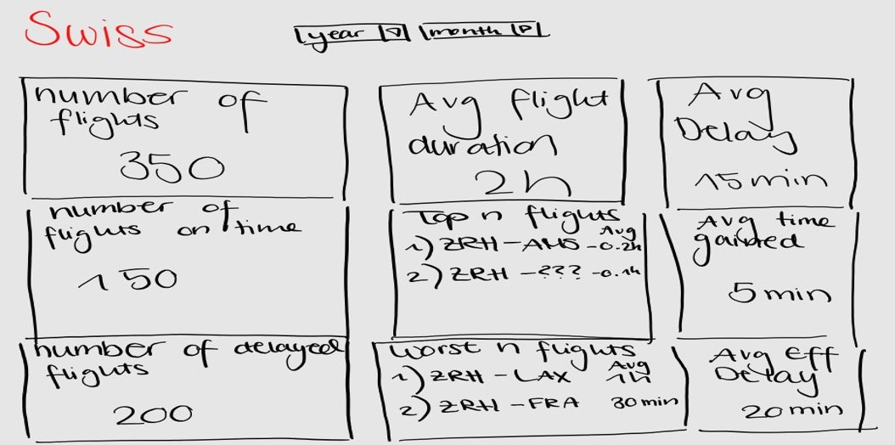

Schweizer Pünktlichkeit -Wie pünktlich ist die Swiss wirklich?
Project Info
1. Ziel des Projektes
Das Hauptziel dieses Projekts ist es, dem Management von Swiss eine übersichtliche und aussagekräftige Darstellung der Flugverspätungen zu bieten.
Mit den Visualisierungen soll Transparenz geschaffen und detailierte Analysen möglich gemacht werden. Das Projekt soll helfen Spezialisten und Subject Matter Experts Muster in den Daten zu erkennen und so bessere Entscheidungen fällen zu erkennen. Durch diese transparente Darstellung streben wir danach, das Konzept des datenbasierten Entscheidungsfindung (Data-Driven Decision Making) zu fördern.
Unsere Visualisierungen bieten einen klaren Einblick in die Performance von Flügen, erlauben detaillierte Analysen und legen die Grundlage für fundierte Verbesserungen der aktuellen Prozesse.
1.1 Fokus
In diesem Projekt wurde sich auf folgende Metriken beschränkt:
Die Analyse der Flugzeiten
Die Analyse der zeitlichen Entwicklungen
Die Analyse der Verschiedenen Flugrouten
1.2 Skizzen
Als Vorbereitung auf das Projekt wurden 3 Skizzen erstellt, in welcher die geplanten Visualisierungen von Hand dargestellt wurden.
Die Skizzen wurden noch ohne grosse Kenntnisse von D3.js umgesetzt, konnten aber zu grossen Teilen in finalen Projekt umgesetzt werden.
Als Einstiegseite wurde eine Übersicht verschiedener KPIs (Key Performance Indicator) geplant, die in einer Kacheloptik gezeichnet wurde:

Als zweite Seite sollte eine Weltkarte implementiert werden, auf welcher die Flüge grafisch aufgearbeitet sind.
Anhand dieser Karte können möglicherweise Orte / Flüge identifiziert werden, die grosse Verspätungen aufweisen.
In der letzen Skizze wurde ein Vergleich der einzelnen Jahreszeiten angezeigt, bei welchem die Möglichkeit bestehen soll, zwischen der Ansicht der Jahreszeiten und der einzelnen Monate wechseln zu können.
DATA
2. Datenherkunft & Datenaufbereitung
2.1 Datenherkunft
Die Daten wurden über die API von Flightradar (Link) bezogen und decken den Zeitraum vom November 2019 bis Dezember 2022 ab. Zur Verfügung stehen Flugdaten wie Abflugdatum, geplante Abflugzeit (Scheduled Time Departure - STD), effektive Abflugzeit (Actual Time Departure - ATD), geplante Ankunftszeit (Scheduled Time Arrival - STA) sowie der Status, in welchem die Landezeit festgehalten wird. In diesem Dataset sind zwar die einzelnen Abflug- und Zielflughäfen vermerkt, jedoch ohne geograpfische Informationen. Um die geograpfischen Daten zu den Flughäfen hinzuzufügen, wurde das Dataset mit einem weiteren Dataset (Airports.csv) zusammengeführt.
Insgesamt wurden 23'607 Flüge analyisert, die auf sechs unterschiedlichen Flugzeugtypen der Swiss basieren.
Um die Daten vorzubereiten wurden die folgenden Schritte durchgeführt:
Zusammenführen der Daten der Flugzeugtypen
Entfernen von ungültigen Daten (Data Cleansing)
Definition IATA Codes
Korrektur des Datums
Hinzufügen der Daten zum Flugzeugtype
Hinzufügen der Lat und Long für die Flughäfen
Berechnung der Verspätung
Zusätzliche Datumsaufteilungen
2.2 Data Cleansing
Von den 21'125 Flügen beinhalteten 1'702 ungültige Daten. Dabei handelte es sich um falsche FROM- oder TO-Flughäfen, Flüge ohne Flugzeit oder interne Testflüge.
Bei den Flugnummern fiel auf, dass gewisse Flüge eine Art "Testcode" aufweisen. Nach näherer Untersuchung stellte sich heraus, dass es sich dabei um Testflüge nach Wartungen / Reparaturen handelt, weshalb diese Flüge nicht weiter berücksichtigt wurden.
Die IATA Codes sind dreistellige Codes, die für jeden Flughafen einzigartig sind. Durch diese Codes konnte das zusätzliche "Airports" Dataset gejoint werden, wodurch die Koordinaten der Flughäfen genutzt werden können. Diese Codes können aus der FROM und TO Spalte entnommen werden, da die letzten 3 Zeichen dieser Spalten die IATA Codes beinhalten.
Um die Flugzeugtypen in der Visualisierung darstellen zu können, mussten über die Flightradar API auch die von der Swiss genutzten Flugzeugtypen inkl. Informationen wie Alter des Fliegers etc. hinzugefügt werden. Die Verbindung konnte dabei über die Serial Number (MSN) durchgeführt werden, da diese für jeden Flugzeug einzigartig ist.
Nach dem Einfügen der Koordinaten, der Berechnung der Verspätung aus dem Status (Landed on XX:XX) und der STA (Scheduled Time Arrival) sowie dem hinzufügen weiterer Datumsangaben konnte die Datenvorbereitung fertiggestellt werden. Dabei wurde auf eine Formel zugegriffen, mit welcher die Verspätung auch bei tagesübergreifenden Flügen korrekt berechnet werden kann (siehe Referenzen).
3. Visualization
3.1 Aufbau
Die Visualisierung der Daten wurde so aufgebaut, dass die zuerst ein Überblick über die Summe der Verspätungen aufgeteilt auf die Jahreszeiten angezeigt wird.
Dadurch können erste Muster entdeckt werden, die dann mit dem Scatterplot und der Map weiter analysiert werden können.
3.2 Overview
Im Overview-Bereich der Visualisierung sind zwei der insgesamt vier Grafiken. Diese Grafiken sollen einen ersten Überblick über die Daten ermöglichen.
Durch einen Klick auf eine Jahreszeit werden die dazugehörigen Monate angezeigt, damit die Verspätungen auch auf der monatlichen Ebene analysiert werden können.
Die Daten von November 2019 - Dezember 2022 wurden für diese Darstellung nicht weiter aufgeteilt, das heisst, dass also beispielsweise die Monate Dezember, Januar und Februar der Jahre 2019/2020/2021 und 2022 als Winter klassifiziert werden.
3.3 Scatterplot of delayed Flights and World Map
Die folgenden zwei Visualisierungen können beide über die zwei Filter unten gesteuert werden. Zusätzlich ist es möglich, im Scatterplot interessante Daten mittels Brushing auszuwählen und dadurch eine detailliertere Ansicht auf gewisse Flug-Cluster zu erhalten.
Im Scatterplot sind die einzelnen Flüge aufgezeigt basierend auf ihrere Flugzeit und der Verspätung. Dabei werden nur Flüge berücksichtigt, die auch effektiv Verspätung aufwiesen.
Die Flüge sind zudem basierend auf der Jahreszeit gefärbt.
Auf der Connection Map sind die einzelnen Flüge geografisch dargestellt und gemäss der Legende auf der rechten Seite eingefärbt. Auch diese Visualisierung beinhaltet nur Flüge, auf welchen tatsächlich Verspätungen aufgetreten sind.
4. Design
4.1 Foundations Visual Design
Zwei Bar-Charts wurden erstellt, um die Jahreszeiten, den Monaten und ihren jeweiligen Summen an Verspätungen prägnant darzustellen. Diese visuellen Darstellungen bieten dem Management von Swiss eine unmittelbare Übersicht über die zeitliche Entwicklung der Verspätungsmuster.
Ein Scatterplott wurde erstellt um den Zusammenhang zwischen Verspätungen und der gesamten Flugzeit zu verdeutlichen. Diese Visualisierung ermöglicht es, potenzielle Muster und Ausreißer zu erkennen, um gezielte Optimierungen in den Flugabläufen vorzunehmen.
Die Einbindung einer Kartenvisualisierung vervollständigt das visuelle Design und bringt einen geografischen Touch in die Darstellung der Flugrouten. Diese Funktion ermöglicht dem User geografische Zusammenhänge zu erkennen.
4.2 Fundamental Principals of Analytical Design (Tufte)
Durch die Weltkarte und die Färbung gemäss Verspätung kann die Vergleichbarkeit sichergestellt werden. Die Kausalität kann durch die Filteroptionen hergestellt werden, da so die Zusammenhänge von Verspätungen zu den Jahreszeiten und Flugzeugtypen gezeigt werden. Durch die Verwendung verschiedener Grafiken mit unterschiedlichen Metriken ist die umgesetzte Analyse multivariat. Durch konsistente Farbgebung und Verwendung von Tooltips wird nachvollziehbar gezeigt, weshalb gewisse Flugrouten auf der Weltkarte röter gefärbt sind. Durch die Tooltips und die Kommentare auf der Webseite ist die Dokumentation der Visualisierung gegeben. Die Daten werden ohne unnötige Formatierungen präsentiert, sodass die Aufmerksamkeit ganz auf den Daten liegt.
4.3 Data-Ink Ratio (Tufte)
Gewisse Tinte der Graphen repräsentieren effektive und nützliche Informationen und andere Tinte nicht.
In einem gewissen Mass muss die non-data ink bestehen, aber es ist wichtig nur notwendige non-data ink Elemente hinzuzufügen, damit die Visualisierungen verständlich sind.
(Stephen Few, S.141-142)
In diesem Projekt wurde darauf geachtet keine unnötigen Elemente oder Farben zu brauchen, welche von den wesentlichen Informationen ablenken. Die Farben wurden wo nötig und sinnvoll wiederverwendet, bei den Bar Charts und dem Scatterplott wurden die gleichen Farben für die Jahreszeiten verwendet.
4.3.1 Reduzieren von unnötigener Data Ink (Stephen Few, S.143)
Am Anfang dieses Projektes wurden 9 KPI Cards im Konzept geplant. Auf diesen Cards sollten auf einem Blick verschiedene Kennzahlen stehen, damit die User eine Overview mit wichtigen Kennzahlen erhalten.
Da mit den restlichen Grafiken die Informationen besser und detailierter aufgezeigt werden kann, wurde beschlossen die KPI Cards ganz rauszunehemen.
4.3.2 Priorisieren
Mit den Visualisierungen soll Transparenz über die Flugdaten und eine Möglichkeit geboten werden, die Flugzeiten und deren Verspätungen analysieren zu können.
Um diese Informationen für den User priosieren zu können wurden die alle nötigen Information gefärbt und hervorgehoben.
(Stephen Few, S.146)
4.4 Human Perception
Die klare Gestaltung und farbliche Differenzierung in unseren Bar-Charts, beispielsweise nach Jahreszeiten, erleichtert es den Betrachtern, Muster und Trends schnell zu erfassen. Durch den Einsatz von
intuitiven Farbschemata und visuellen Hierarchien wird die Fokussierung auf relevante Daten unterstützt. Dies trägt dazu bei, die kognitiven Belastungen zu minimieren und die Effizienz der Informationsaufnahme
zu maximieren.
Obwohl die Grafiken selber sprechend sind, wurden Erläuterungen hinzugefügt um dem User Kontext zu geben und Hintergrundinformationen zu geben.
(Stephen Few, S. 149)
Um eine allgemeine, zusammenhängende Ansicht zu schaffen wurden Farben (Jahrezeiten) wiederverwendet und auch in der Map die Farben je nach Verspätung farblich hervorgehoben.
4.5 Tasks in Data Visualization
TODO
Jeffrey Heer und Ben Shneiderman
Spezifikation von Daten und Ansichten (visualisieren, filtern, sortieren, ableiten)
Manipulation von Ansichten (auswählen, navigieren, koordinieren, organisieren) -
Prozess und Herkunft (aufzeichnen, kommentieren, weiterleiten, anleiten)
https://medium.com/@barbaradong/information-visualization-ii-1f2a25998844
Tooltip
4.6 Interaction Concept
Der User kann mit den folgenden Elementen mit den Visualisiserungen interagieren:
4.6.1 Overview-first
Als erstes werden die Jahreszeiten aufgezeigt. Wenn der User auf die einzelnen Jahreszeiten klickt, erhält der User eine Detail Ansicht der jeweiligen Monate.
Durch diese Grafiken soll der User einen Überblick bekommen, wie die Verspätungen über die Monate verteilt ist. So können Muster über die Jahreszeiten gezeigt werden oder die allgemeine Performance analysiert werden.
4.6.2 Zoom-and-filter
Im Scatterplott kann mit brushing zoomen und Datenpunkte genauer angeschaut werden. In der Wordmap kann allgemein gezoomt und zum gewünschten Punkt gezogen werden.
Beide Grafiken können mit zwei Filter spezifischer auf Jahreszeit und Flugzeugtyp gefiltert werden.
4.6.3 Details on Demand
Damit Informationen erst dann angezeigt werden, wenn der User diese auch wirklich braucht, kann das Prinzip Details on Demand angewendet werden.
In diesem Projekt wurde die Monatsansicht so erstellt, dass sie effektiv erst angezeigt wird, wenn der User an der monatlichen Ansicht interessiert ist.
Zusätzlich sind Tooltips in der Monatsansicht und in der Map ersichtlich um genauere Informationen zu erhalten, wenn eine spezifische Information interessant ist.
(Infovis Wiki)
4.6.4 Mögliche Interaktionen
Bar Charts (Jahreszeit und Monatsview) welche mit "linking" verbunden sind
Scatterplot welche die brushing Funktionalität hat
Die Worldmap welche generell interaktiv ist und der User zoomen kann
Zwei Filter welche den Scatterplot und Worldmap filtern
Buttons mit denen der User die World Map zoomen, rauszoomen und wieder reseten kann auf die originale Ansicht
5. Herausforderungen
Das Erstellen der Visualisierungen in D3.js war eine grosse Herausforderung. Da beiden Projektmitgliedern Erfahrung im Umgang mit Javascript fehlte, musste sowohl Javascript als auch D3.js gelernt werden. Da die verfügbaren Beispiele im Internet oftmals auf unterschiedlichen D3.js Versionen basierten, wurde viel Zeit aufgewendet, Fehler zu korrigieren, die mit einer Abstimmung der D3.js Version hätten vermieden werden können.
Die Datenbeschaffung konnte leider nicht wie geplant umgesetzt werden. Die verwendeten Daten wurden ursprünglich für eine Gruppenarbeit in einem anderen Modul vorbereitet, schlussendlich dann aber nicht genutzt. In der Zwischenzeit wurde die API von Flightradar geändert, wodurch keine neuen Daten mehr bezogen werden konnten. Der geplante Vergleich der Swiss zu anderen Airlines (wie bei der Präsentation der Idee von einem anderen Studenten vorgeschlagen) war daher nicht möglich. Zudem musste die zugrundeliegende Problemstellung / Ausgangslage angepasst werden, da die Daten nicht die anfangs geplanten Schlussfolgerungen zuliessen.
6. Erkenntnisse
Aus den Visualisierungen ist ersichtlich, dass die beste Jahreszeit für eine Flugreise der Frühling ist. Interessanterweise ist der Winter die zweitbeste Jahreszeit (gemessen an den total Delays), was vermutlich für viele nicht unbedingt intuitiv ist. Aufgrund von schlechterem Wetter, Schnee und Eis rechnet man mit mehr Verspätungen im Winter.
Im Scatterplot ist auch sichtbar, dass es keinen direkten Zusammenhang zwischen der Flugzeit und der Verspätung gibt. Interessant ist, dass sich die meisten Flugverspätungen auf unter 100 Minuten beschränken - Das ist als Reisender zwar eine lange Zeit, jedoch heisst das auch, dass die Chance auf eine mehrstündige Verspätung sehr klein ist.
Die in anderen Modulen genutzten Visualisierungstools wie Power BI, Tableau oder Grafana sind im Vergleich intuitiver nutzbar, jedoch nicht in demselben Ausmass konfigurierbar. Mit D3.js können nahezu alle vorstellbaren Visualisierungen umgesetzt werden, benötigen jedoch wesentlich mehr Aufwand für Debugging und Testing.
Die Auswahl und Qualität der Daten ist essenziell, um ein Projekt erfolgreich durchführen zu können. Trotz der Schwierigkeiten bei der Datenbeschaffung und Umsetzung war das Projekt lehrreich und es konnte schlussendlich eine funktionierende Webseite erstellt werden.

{kind=link}